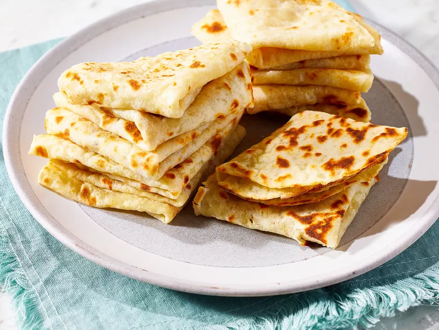

Home
Norwegian Lefse

Lefse is a traditional, soft Norwegian flatbread. Resembling a thin crepe or a
slightly thicker tortilla, it is primarily made from riced potatoes, flour, butter, and
milk or cream. Baked on a hot, dry griddle, it can be enjoyed either sweet with cinnamon and
sugar or savory with meats and cheeses.
Ingrediants
- 10 pounds potatoes, peeled
- ½ cup butter
- ⅓ cup heavy cream
- 1 tablespoon salt
- 1 tablespoon white sugar
- 2 ½ cups all-purpose flour
Steps
- Gather all Ingrediants
- Place potatoes in a large pot and cover with water; bring to a boil. Reduce heat to medium-low and simmer until tender, about 20 minutes; drain.
- Run hot potatoes through a potato ricer into a large bowl. Beat butter, cream, salt, and sugar into riced potatoes. Let cool to room temperature.
- Stir flour into potato mixture to form a soft dough. Pull off pieces of dough and form into walnut-sized balls.
- Lightly flour a clean cloth and roll out lefse balls to 1/8-inch thick.
- Heat a griddle over high heat.
- Cook lefse on the hot griddle until brown blisters form, about 1 minute per side. Place cooked lefse on a damp towel to cool slightly. Repeat with remaining dough, stacking them on top of each other as they're cooked; cover until ready to serve.